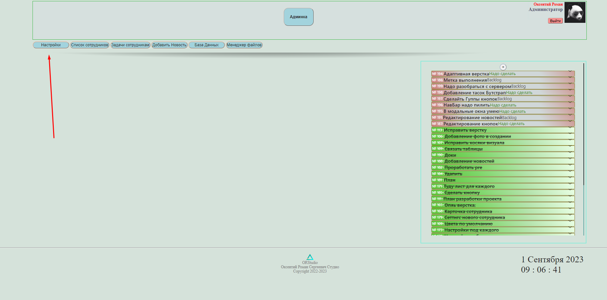

Для изменения темы визуального оформления перейдите во вкладку "Настройки"
Посе чего выберете пункт "Темы" откроется меню с полями выбора цвета фона, текста и кнопок.
После выбора нужных вам цветов, нажмите применить, настройки изменятся на всех страницах кроме страницы настроек.